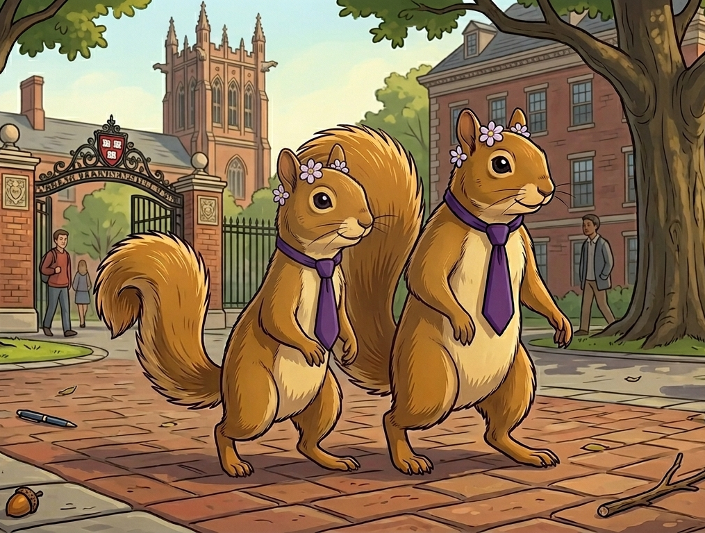

Women’s Week
Programming that brings women’s groups together for panels, conversations, and events centered on issues affecting women.
Programs
The Via Faciam Foundation supports gatherings, initiatives, and campus-facing programs that amplify women’s voices and build lasting networks.
Programming that brings women’s groups together for panels, conversations, and events centered on issues affecting women.
An intergenerational reception designed to connect students and faculty in an elegant, welcoming setting.
A resource-centered event that connects students with organizations, leadership opportunities, and campus support.
Social and educational gatherings that help women build relationships, confidence, and a stronger sense of belonging.
Our programs are designed to benefit women across campus and beyond through mentorship, professional access, resource-sharing, and thoughtful convening.
Each program is an opportunity to create connection, surface needs, and build partnerships that make support more visible and easier to access.

A collaborative campaign that promoted education, encouraged informed decisions, and helped drive expanded vaccine access for students through University Health Services.
A co-sponsored program connecting students with Harvard professionals and campus resources around nutrition, health, and informed decision-making.
A campus-wide forum that brought students together to discuss the social environment at Harvard and imagine ways to improve it.